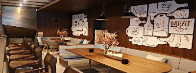

Welcome to Gogi!
Nestled in the heart of the Highlands in Louisville, Kentucky, we pride ourselves on having the largest selection of Bourbon and Rye in the Bluegrass State. With currently over 200 varieties, we are certain that we have a Bourbon for every pallette. Our extensively trained staff are all equiped to help even the newest of Bourbon drinkers find something that suits them. Come visit us soon at our location listed below, and look out for our new downtown location opening in Fall of 2020!
Nestled in the heart of the Highlands in Louisville, Kentucky, we pride ourselves on having the largest selection of Bourbon and Rye in the Bluegrass State. With currently over 200 varieties, we are certain that we have a Bourbon for every pallette. Our extensively trained staff are all equiped to help even the newest of Bourbon drinkers find something that suits them. Come visit us soon at our location listed below, and look out for our new downtown location opening in Fall of 2020!